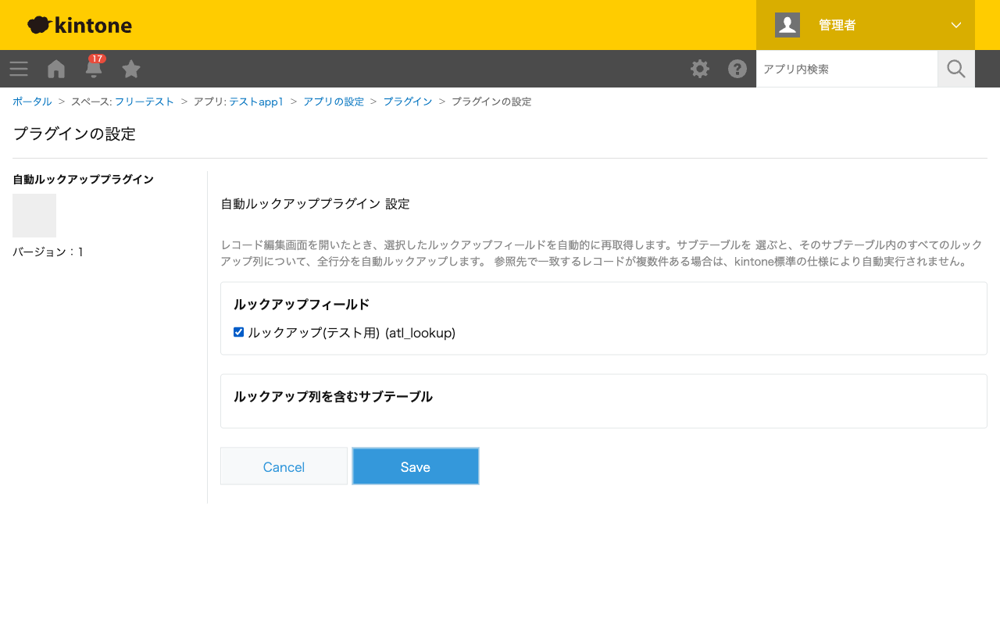

GovAppsプラグイン 安全性を確認できる無料kintoneプラグイン集
レコード編集画面を開いたとき、設定画面で選んだルックアップフィールドを自動的に再取得(再ルックアップ) します。サブテーブルを対象に選ぶと、そのサブテーブル内のルックアップ列すべてについて、全行分を 自動ルックアップします。参照先の情報が更新された後も、レコードを開き直すだけで最新の値に揃えられます。
取引先マスタの住所や単価が更新された後、既存のレコードのルックアップフィールドはそのままでは古い値のままです。本プラグインを設定しておけば、レコード編集画面を開くだけで自動的に再ルックアップが実行され、最新の値に更新されます。
明細サブテーブルの各行に商品マスタへのルックアップ列がある場合、対象にサブテーブルを選択しておけば、行数に関わらず全行分のルックアップ列がまとめて再取得されます。行ごとに手動で再ルックアップを操作する手間がありません。
レコード編集画面を開いたとき(edit.show)にのみ発動します。レコード追加画面では発動しません。参照先で一致するレコードが複数件ある場合は、kintone標準の仕様により自動実行されません(その場合はユーザーが手動で選択してください)。
kintoneセキュアコーディングガイドラインに沿って実装時にチェックしています。特に重要な点は次のとおりです。
lookupプロパティにtrueをセットしてreturnする仕組み)のみで行っており、本プラグイン自身が参照先アプリへの通信を組み立てることはありません。外部サーバーへの通信・外部ライブラリも一切使用していません。lookupプロパティを設定するのみ)ため、XSSのリスクとなる文字列描画箇所がありません。設定画面のエラーメッセージ等の描画はtextContentのみを使用しています。詳細な確認項目・確認日は下記GitHubのチェックリストに全項目を掲載しています。

このプラグインはREST APIを一切実行しません。フィールド一覧の取得は
kintone.app.getFormFields()、再ルックアップの指示はイベントオブジェクトの
lookupプロパティ経由のJavaScript APIのみで完結し、API実行数制限に影響することは
ありません(再ルックアップ自体の実行はkintone本体が内部的に行います)。